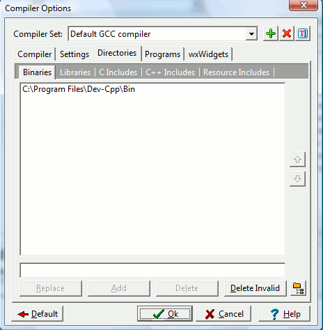

Compiler Options
Directories tab
These are the directories the IDE will
search when it is building your program.

Binaries
Specifies
the locations of the compiler, linker, and other executables.
Libraries
Specifies
the locations of the library files (*.a, *.dll, *.lib, *.def).
C includes
Specifies the locations of the headers (*.h) for C programs.
C++ includes
Specifies the locations of the headers (*.h, *.hpp) for C++ programs.
Resource includes
Specifies the location for the resource files (*.rc) for Windows
programs.